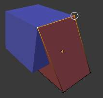
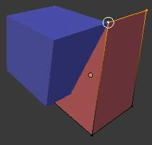
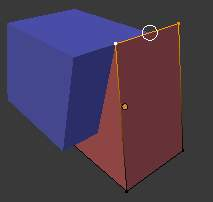
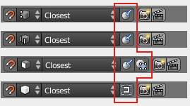
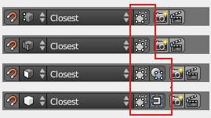

吸附¶
There are two types of snap operations that you can use in Blender. The first type snaps your selection or cursor to a given point while the second type is used during transformations (translate, rotate, scale) and snaps your selection to elements within the scene.
参考
Shift-SThe Snap menu (also available from the 3D header in both 物体模式 and 编辑模式 and ). This menu provides a number of options to move the cursor or your selection to a defined point (the cursor, selection or the grid).
- Selection to Grid
- Snaps the currently selected object(s) to the nearest grid point.
- Selection to Cursor
- Snaps the currently selected object(s) to the cursor location.
- Cursor to Selected
- Moves the cursor to the center of the selected object(s).
- Cursor to Center
- Moves the cursor to the center of the grid.
- Cursor to Grid
- Moves the cursor to the nearest grid point.
- Cursor to Active
- Moves the cursor to the center of the active object.
变换 吸附¶
The ability to snap Objects and Mesh element to various types of scene elements during a transformation is available by toggling the magnet icon (which will turn red) in the 3D视图’s header buttons.
Magnet icon in the 3D视图 header (red when enabled).
Snap Element¶
Snap Element menu.
- Volume
- Snaps to regions within the volume of the first Object found below the mouse cursor. Unlike the other options, this one controls the depth (i.e. Z-coordinates in current view space) of the transformed element. By toggling the button that appears to the right of the snap target menu (see below), target objects will be considered as a whole when determining the volume center.
- Face
- Snap to the surfaces of faces in mesh objects. Useful for retopologizing.
- Edge
- Snap to edges of mesh objects.
- Vertex
- Snap to vertices of mesh objects.
- Increment
Snap to grid points. When in Orthographic view, the snapping increment changes depending on zoom level.
Note
In this context the grid does not mean the visual grid cue displayed. 吸附 will use the resolution of the displayed grid, but all transformations are relative to the initial position (before the snap operation).
Snap Target¶
Snap target options become active when either Vertex, Edge, Face, or Volume is selected as the snap element. These determine what part of the selection snaps to the target objects.
- Active
- Moves the active element (vertex in 编辑模式, object in 物体模式) to the target.
- Median
- Moves the median of the selection to the target.
- Center
- Moves the current transformation center to the target. Can be used with 3D游标 to snap with an offset.
- Closest
- Moves the closest point of the selection to the target.

Closest. |

Active. |

Median. |
Additional Snap Options¶

物体模式. |

编辑模式. |
As seen by the red highlighted areas in the image above, additional controls are available to alter snap behaviour. These options vary between mode (Object and Edit) as well as Snap Element. The four options available are:
| Icon | Details |
|---|---|
| Align rotation with the snapping target. | |
| Project individual elements on the surface of other objects. | |
| Snaps elements to its own mesh. | |
| Consider Objects as whole when finding volume center. |
{kind=link}
{kind=link}
{kind=link}
{kind=link}
Multiple Snap Targets¶
Multiple snapping targets.
Once transforming a selection with 吸附 on (not just when holding Ctrl),
you can press A to mark the current snapping point, then proceed to mark as many other
snapping points as you wish and the selection will be snapped to the average location of all
the marked points.
Marking a point more than once will give it more weight in the averaged location.